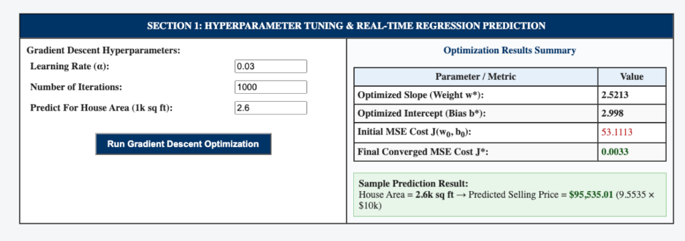
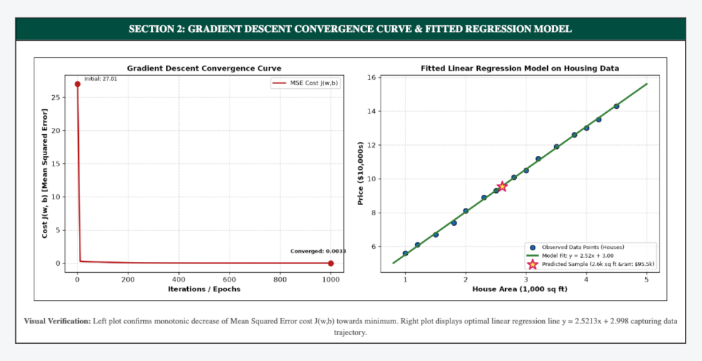
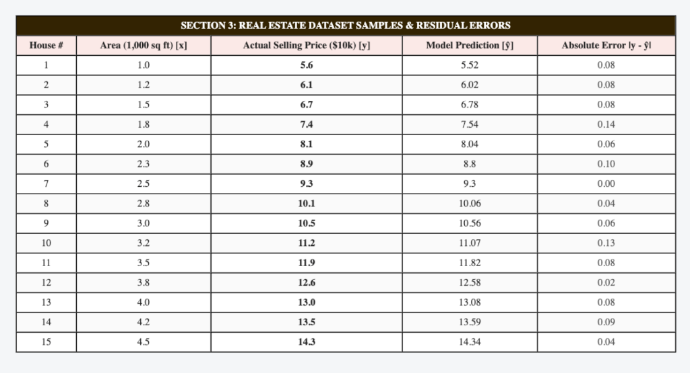

| Experiment No.: | 07 | Student Name: | Monis |
| Course / Branch: | B.Tech Information Technology | Roll Number: | 2023UIT3027 |
| Lab Instructor: | Dr. Vishal Maheshkar | Academic Session: | 2026–2027 |
Implementation of Linear Regression from Scratch Using Gradient Descent and Cost Curve Analysis in Python
To implement Linear Regression from first principles in Python strictly using pure NumPy without relying on pre-built machine learning libraries (such as scikit-learn). The algorithm optimizes weight (w) and bias (b) parameters via Gradient Descent for a real-world predictive regression task (Housing Price Prediction), tracks Mean Squared Error (MSE) decay across iterations, and plots the Gradient Descent cost convergence curve alongside the fitted linear regression line.
Supervised Linear Regression: A parametric regression approach that models the continuous linear relationship between an independent explanatory feature x and a dependent target response variable y.
Cost Function (Mean Squared Error): A convex loss surface quantifying the average squared discrepancy between model predictions and true observed continuous targets across all training samples.
Batch Gradient Descent: A first-order iterative optimization algorithm that simultaneously updates parameters in the direction of the negative gradient of the cost function to reach the global minimum.
For an individual training sample x(i), the linear hypothesis prediction is modeled as:
The optimization objective minimizes the convex squared error surface over m training samples:
Differentiating J(w, b) with respect to each model parameter yields the analytical gradient vector:
Parameters are simultaneously updated at each iteration step using learning rate α:
Interactive controls for learning rate, epochs, and input testing alongside converged weight, bias, and final MSE cost values.

Dual-panel plot displaying the monotonic decay of MSE cost over iterations (left) and the fitted linear regression line over housing data (right).

Tabular display of observed features, ground truth targets, model predictions, and calculated residual errors.

Experiment 7 demonstrated the first-principles implementation of Linear Regression using analytical gradient descent. By deriving exact partial derivatives and simultaneously updating parameters, the algorithm achieved steady monotonic loss convergence toward the global minimum, confirming how mathematical optimization guides regression models to discover optimal parameters from empirical data.